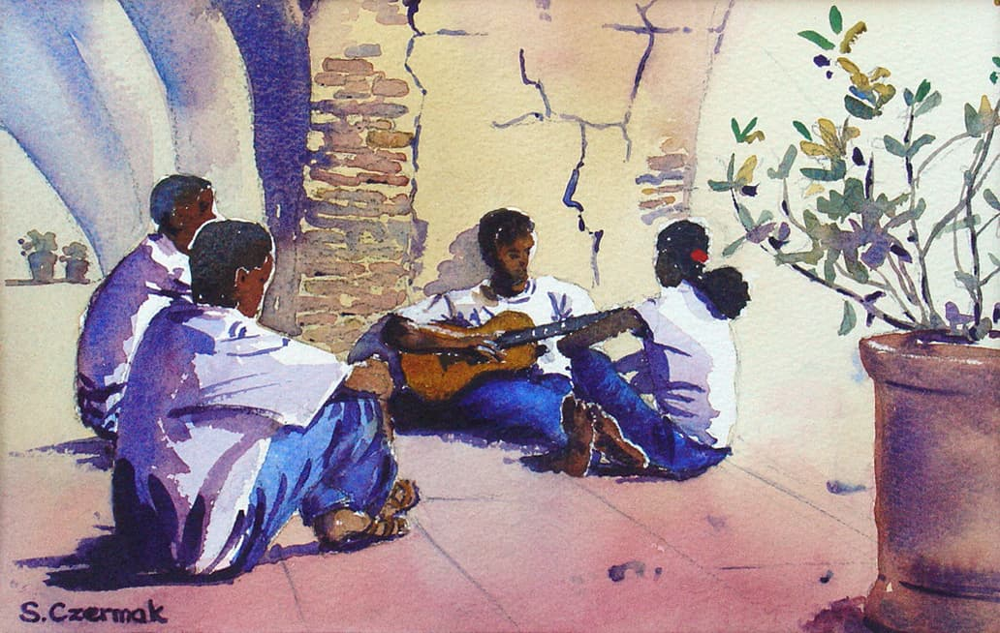

The story behind
Friends in the Arcade
What a joy to find these friends playing together in a village, one Sunday afternoon. The arcade framed them perfectly — the deep shadow of the stone arch giving way to the sunlit courtyard beyond.
Illustrative story draft — to be confirmed with Susan
The painting captures the easy companionship of the moment: bodies leaning together in the game, the cool shadow of the arch a respite from the bright square beyond. Susan noticed how the light divided the scene — the players in half-darkness, the world beyond in full sun.
SW France · 2023
Watercolour on paper · 355 × 265 mm
Sold · Private collection
Enquire about similar works